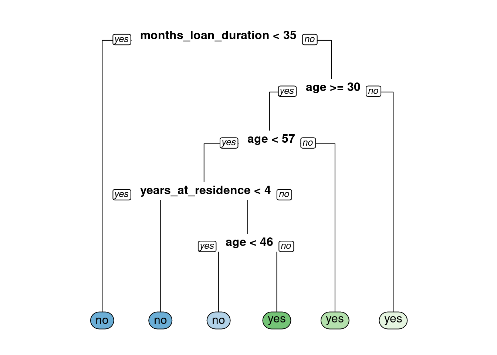

Chapter 2 Classification Trees
Welcome to the Course
2.1 Build a Classification Tree
A classification tree is a decision tree that performs a classification (vs regression) task.## Build a Classification Tree
Let’s get started and build our first classification tree.
You will train a decision tree model to understand which loan applications are at higher risk of default using a subset of the German Credit Dataset. The response variable, default, indicates whether the loan went into a default or not, which means this is a binary classification problem (there are just two classes).
You will use the rpart package to fit the decision tree and the rpart.plot package to visualize the tree.
Exercise
The data frame creditsub is in the workspace. This data frame is a subset of the original German Credit Dataset, which we will use to train our first classification tree model.
- Take a look at the data using the
str()function.
## tibble[,5] [1,000 × 5] (S3: tbl_df/tbl/data.frame)
## $ months_loan_duration: num [1:1000] 6 48 12 42 24 36 24 36 12 30 ...
## $ percent_of_income : num [1:1000] 4 2 2 2 3 2 3 2 2 4 ...
## $ years_at_residence : num [1:1000] 4 2 3 4 4 4 4 2 4 2 ...
## $ age : num [1:1000] 67 22 49 45 53 35 53 35 61 28 ...
## $ default : chr [1:1000] "no" "yes" "no" "no" ...- In R, formulas are used to model the response as a function of some set of predictors, so the formula here is
default ~ ., which means use all columns (except the response column) as predictors. Fit the classification decision tree using therpart()function from therpartpackage. In therpart()function, note that you’ll also have to provide the training data frame.
- Using the model object that you create, plot the decision tree model using the
rpart.plot()function from therpart.plotpackage.

2.2 Introduction to Classification Trees
2.2.1 Advantages of Tree-Based Methods
What are some advantages of using tree-based methods over other supervised learning methods?
- Model interpretability (easy to understand why a prediction is made).
- Model performance (trees have superior performance compared to other machine learning algorithms).
- No pre-processing (e.g. normalization) of the data is required.
- 1 and 3 are true.
2.2.2 Prediction with a Classification Tree
Let’s use the decision tree that you trained in the first exercise. The tree predicts whether a loan applicant will default on their loan (or not).
Assume we have a loan applicant who:
is applying for a 20-month loan is requesting a loan amount that is 2% of their income is 25 years old After following the correct path down the tree for this individual’s set of data, you will end up in a “Yes” or “No” bucket (in tree terminology, we’d call this a “leaf”) which represents the predicted class. Ending up in a “Yes” leaf means that the model predicts that this individual will default on their loan, where as a “No” prediction means that they will not default on their loan.
Starting with the top node of the tree, you must evaluate a query about a particular attribute of your data point (e.g. is months_loan_duration < 44?). If the answer is yes, then you go to the left at the split; if the answer is no, then you will go right. At the next node you repeat the process until you end up in a leaf node, at which point you’ll have a predicted class for your data point.

According to the model this person will default on their loan.
2.3 Overview of the Modelling Process
2.3.1 Train/Test Split
For this exercise, you’ll randomly split the German Credit Dataset into two pieces: a training set (80%) called credit_train and a test set (20%) that we will call credit_test. We’ll use these two sets throughout the chapter. The credit data frame is loaded into the workspace.
Exercise
- Define
n, the number of rows in thecreditdata frame.
- Define
n_trainto be ~80% ofn.
- Set a seed (for reproducibility) and then sample
n_trainrows to define the set of training set indices.
# Create a vector of indices which is an 80% random sample
set.seed(123)
train_indices <- sample(1:n, n_train)- Using row indices, subset the credit data frame to create two new datasets:
credit_trainandcredit_test
# Subset the credit data frame to training indices only
credit_train <- credit[train_indices, ]
# Exclude the training indices to create the test set
credit_test <- credit[-train_indices, ]Train a Classification Tree
In this exercise, you will train a model on the newly created training set and print the model object to get a sense of the results.
- Train a classification tree using the
credit_traindata frame.
# Train the model (to predict 'default')
credit_model <- rpart(formula = default ~ .,
data = credit_train,
method = "class")- Look at the model output by printing the model object.
## n= 800
##
## node), split, n, loss, yval, (yprob)
## * denotes terminal node
##
## 1) root 800 230 no (0.7125000 0.2875000)
## 2) checking_balance=> 200 DM,unknown 365 48 no (0.8684932 0.1315068) *
## 3) checking_balance=< 0 DM,1 - 200 DM 435 182 no (0.5816092 0.4183908)
## 6) months_loan_duration< 22.5 259 85 no (0.6718147 0.3281853)
## 12) credit_history=critical,good,poor 235 68 no (0.7106383 0.2893617)
## 24) months_loan_duration< 11.5 70 11 no (0.8428571 0.1571429) *
## 25) months_loan_duration>=11.5 165 57 no (0.6545455 0.3454545)
## 50) amount>=1282 112 30 no (0.7321429 0.2678571) *
## 51) amount< 1282 53 26 yes (0.4905660 0.5094340)
## 102) purpose=business,education,furniture/appliances 34 12 no (0.6470588 0.3529412) *
## 103) purpose=car,renovations 19 4 yes (0.2105263 0.7894737) *
## 13) credit_history=perfect,very good 24 7 yes (0.2916667 0.7083333) *
## 7) months_loan_duration>=22.5 176 79 yes (0.4488636 0.5511364)
## 14) savings_balance=> 1000 DM,unknown 29 7 no (0.7586207 0.2413793) *
## 15) savings_balance=< 100 DM,100 - 500 DM,500 - 1000 DM 147 57 yes (0.3877551 0.6122449)
## 30) months_loan_duration< 47.5 119 54 yes (0.4537815 0.5462185)
## 60) amount>=2313.5 93 45 no (0.5161290 0.4838710)
## 120) amount< 3026 19 5 no (0.7368421 0.2631579) *
## 121) amount>=3026 74 34 yes (0.4594595 0.5405405)
## 242) percent_of_income< 2.5 38 15 no (0.6052632 0.3947368)
## 484) purpose=business,car,education 23 6 no (0.7391304 0.2608696) *
## 485) purpose=car0,furniture/appliances,renovations 15 6 yes (0.4000000 0.6000000) *
## 243) percent_of_income>=2.5 36 11 yes (0.3055556 0.6944444) *
## 61) amount< 2313.5 26 6 yes (0.2307692 0.7692308) *
## 31) months_loan_duration>=47.5 28 3 yes (0.1071429 0.8928571) *2.4 Evaluating Classification Model Performance
2.5 Compute confusion matrix
As discussed in the previous video, there are a number of different metrics by which you can measure the performance of a classification model. In this exercise, we will evaluate the performance of the model using test set classification error. A confusion matrix is a convenient way to examine the per-class error rates for all classes at once.
The confusionMatrix() function from the caret package prints both the confusion matrix and a number of other useful classification metrics such as “Accuracy” (fraction of correctly classified instances).
Exercise
The caret package has been loaded for you.
- Generate class predictions for the
credit_testdata frame using thecredit_modelobject.
# Generate predicted classes using the model object
class_prediction <- predict(object = credit_model,
newdata = credit_test,
type = "class")
class_prediction## 1 2 3 4 5 6 7 8 9 10 11 12 13 14 15 16 17 18 19 20
## no no no no yes no no no no yes no no no yes no no no no no no
## 21 22 23 24 25 26 27 28 29 30 31 32 33 34 35 36 37 38 39 40
## no no no no no no no no no yes no no no no no no yes yes no yes
## 41 42 43 44 45 46 47 48 49 50 51 52 53 54 55 56 57 58 59 60
## no no no no no no no no no yes no no no yes yes no yes no yes no
## 61 62 63 64 65 66 67 68 69 70 71 72 73 74 75 76 77 78 79 80
## no yes no no yes yes no no no no no yes yes no no no no yes no yes
## 81 82 83 84 85 86 87 88 89 90 91 92 93 94 95 96 97 98 99 100
## no no no no yes no no yes no no no no no yes no no no no no no
## 101 102 103 104 105 106 107 108 109 110 111 112 113 114 115 116 117 118 119 120
## no yes no no yes no no no no no no no no no no no no no no no
## 121 122 123 124 125 126 127 128 129 130 131 132 133 134 135 136 137 138 139 140
## yes yes no no no yes no no no no no no no no yes no yes no no yes
## 141 142 143 144 145 146 147 148 149 150 151 152 153 154 155 156 157 158 159 160
## no no no yes no no no no no yes no no no no no no no no no no
## 161 162 163 164 165 166 167 168 169 170 171 172 173 174 175 176 177 178 179 180
## no no no no no no no no no no no no no no no no no no no no
## 181 182 183 184 185 186 187 188 189 190 191 192 193 194 195 196 197 198 199 200
## no no yes yes yes no yes no no no no no yes no no no yes no no yes
## Levels: no yes- Using the
caret::confusionMatrix()function, compute the confusion matrix for the test set.
# Calculate the confusion matrix for the test set
caret::confusionMatrix(data = class_prediction,
reference = factor(credit_test$default))## Confusion Matrix and Statistics
##
## Reference
## Prediction no yes
## no 117 44
## yes 13 26
##
## Accuracy : 0.715
## 95% CI : (0.6471, 0.7764)
## No Information Rate : 0.65
## P-Value [Acc > NIR] : 0.03046
##
## Kappa : 0.3023
##
## Mcnemar's Test P-Value : 7.08e-05
##
## Sensitivity : 0.9000
## Specificity : 0.3714
## Pos Pred Value : 0.7267
## Neg Pred Value : 0.6667
## Prevalence : 0.6500
## Detection Rate : 0.5850
## Detection Prevalence : 0.8050
## Balanced Accuracy : 0.6357
##
## 'Positive' Class : no
## 2.6 Use of Splitting Criterion in Trees
Compare models with a different splitting criterion
Train two models that use a different splitting criterion and use the validation set to choose a “best” model from this group. To do this you’ll use the parms argument of the rpart() function. This argument takes a named list that contains values of different parameters you can use to change how the model is trained. Set the parameter split to control the splitting criterion.
Exercise
The datasets credit_test and credit_train have already been loaded for you.
- Train a model, splitting the tree based on gini index.
# Train a gini-based model
credit_model1 <- rpart(formula = default ~ .,
data = credit_train,
method = "class",
parms = list(split = "gini"))- Train a model, splitting the tree based on information index.
# Train an information-based model
credit_model2 <- rpart(formula = default ~ .,
data = credit_train,
method = "class",
parms = list(split = "information"))- Generate predictions on the validation set using both models.
# Generate predictions on the validation set using the gini model
pred1 <- predict(object = credit_model1,
newdata = credit_test,
type = "class")
# Generate predictions on the validation set using the information model
pred2 <- predict(object = credit_model2,
newdata = credit_test,
type = "class")- Classification error is the fraction of incorrectly classified instances. Compute and compare the test set classification error of the two models by using the
ce()function.
## [1] 0.285## [1] 0.285